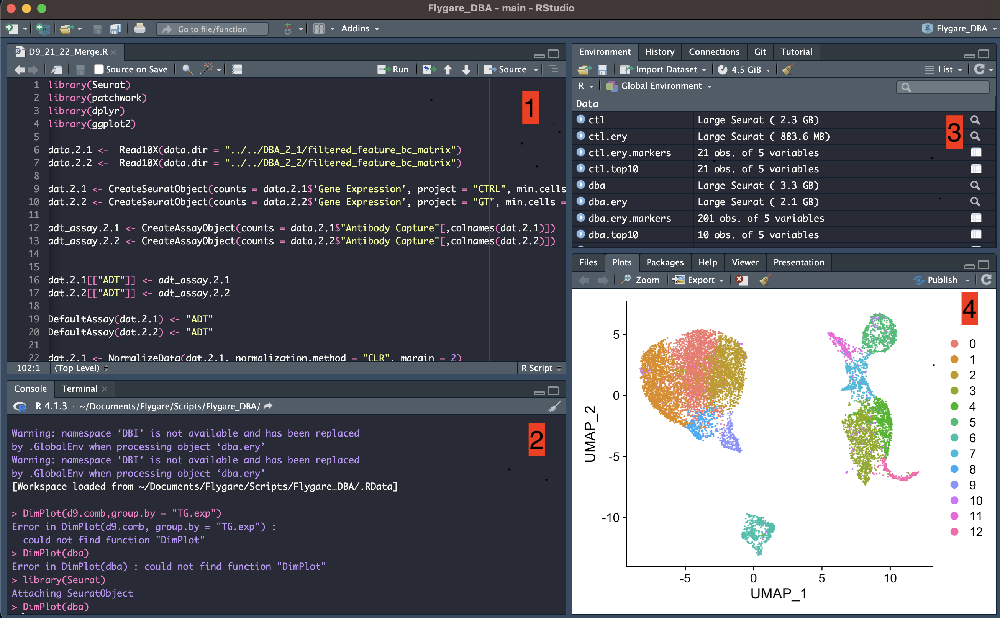
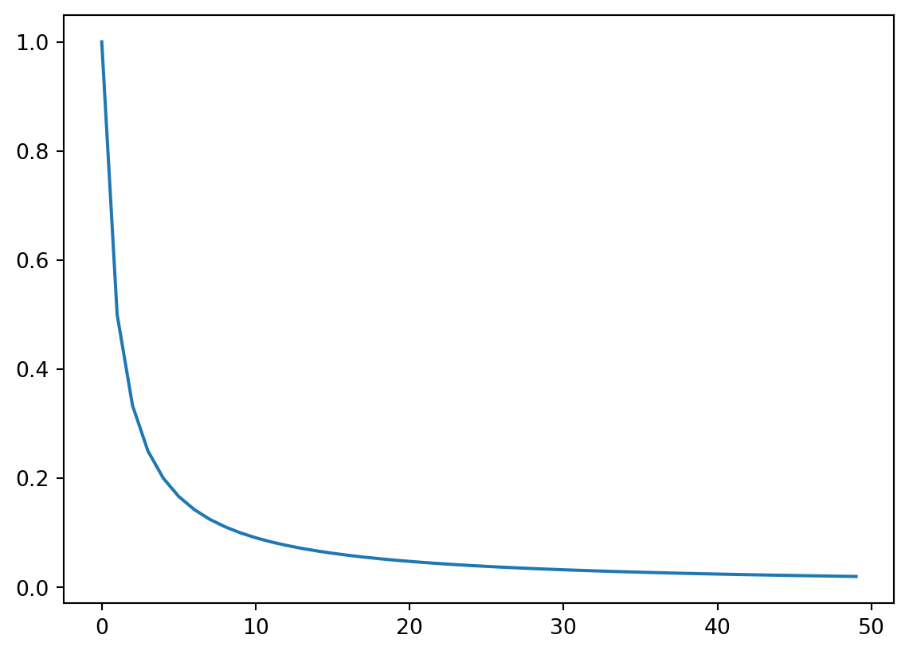
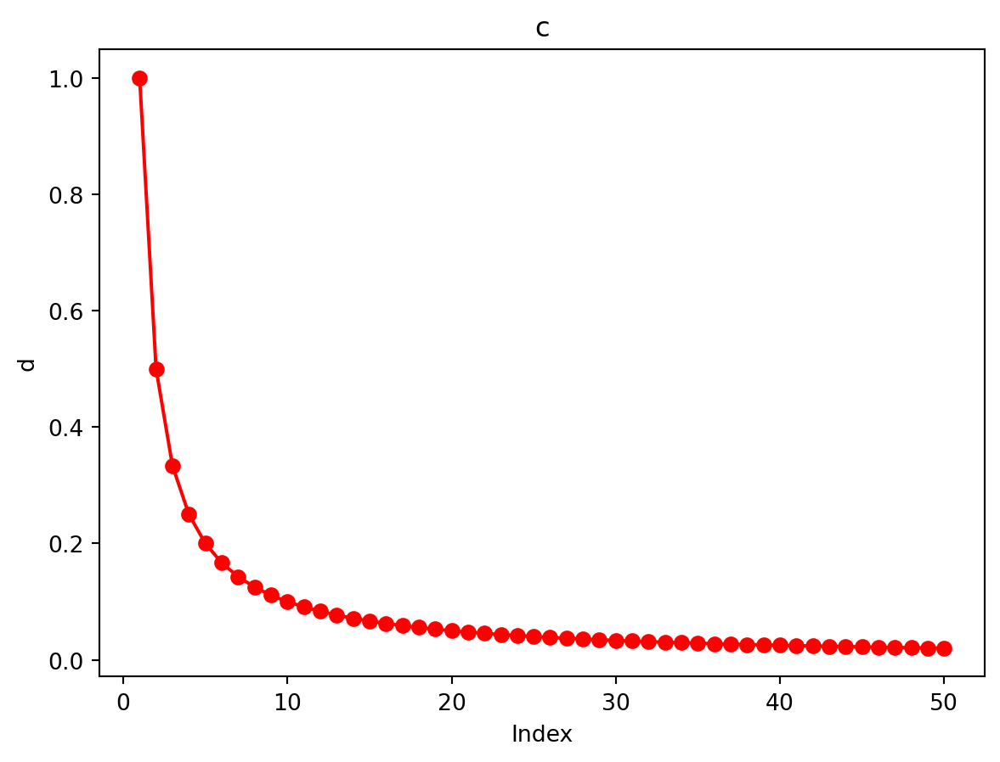
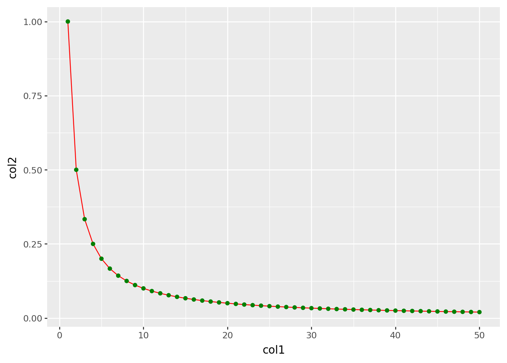
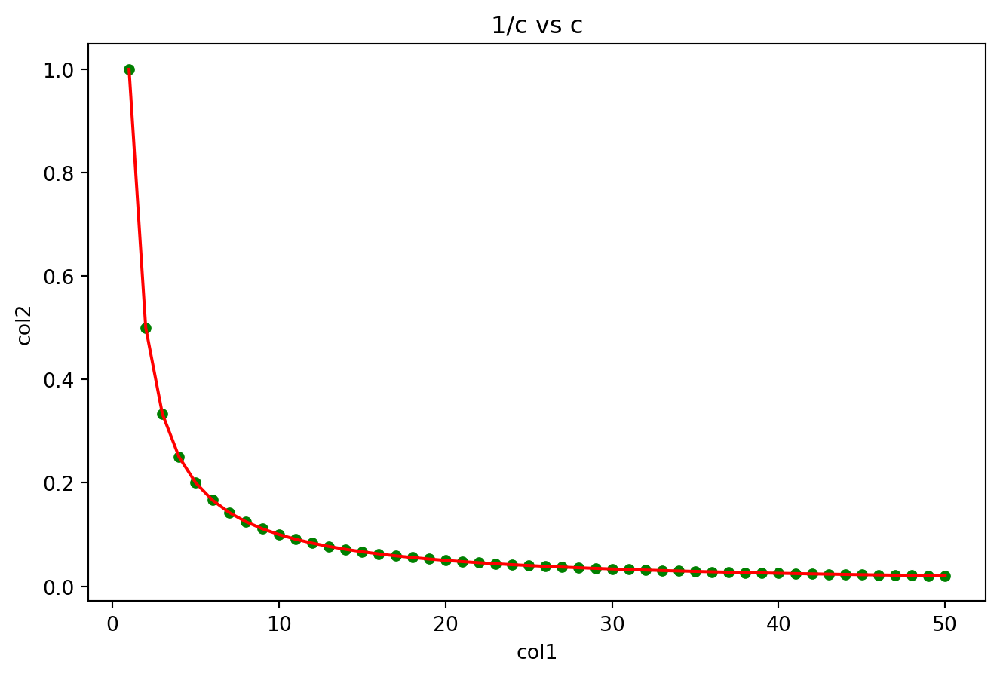
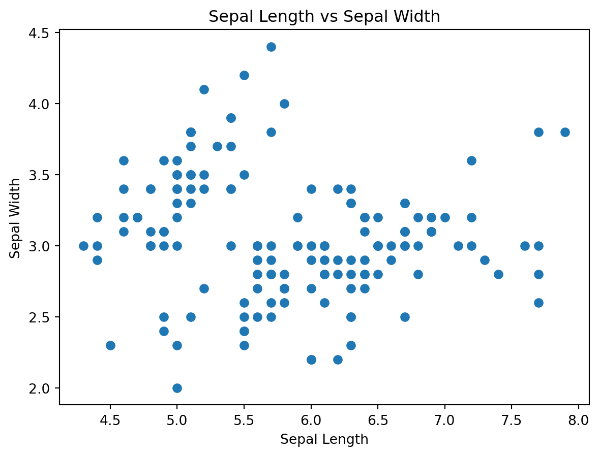
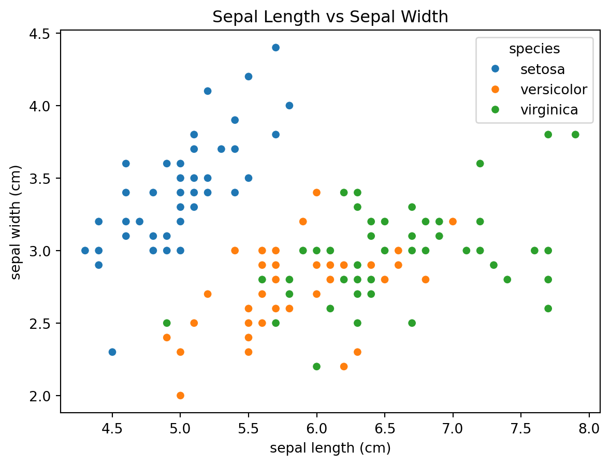

x = [1, 2, 3, 4, 5, 6, 7, 8, 9, 10]Introduction
The purpose of this course is to teach you the basics of the R language and give you the confidence to tackle larger projects using the language. Importantly, we want to get you thinking like a programmer. This doesn’t mean that by the end of the course you will know R fully, but you will know enough so you can go online and look for the help you need to complete most tasks.
Practice makes perfect
Programming is like any skill, the more you practice the better you get. It’s really important that you keep using what you have learned after the course is completed otherwise there is a good chance you will forget everything and you’ll be back to square one.
Why Use R?
R is a high-level programming language with a focus on mathematics and statistics, but R can be used for a wide variety of applications given the flexibility of the language. R is also free, and available for all operating systems. Given the richness of the language and no cost to use it, bioinformaticians have used R for more than 20 years as the platform for which which to develop packages to solve bioinformatics problems.
The BioConductor Project is a repository for bioinformatics tools which continues to grow, and hosts packages such as DESeq2 which you may have heard of. Some other popular packages such as Seurat aren’t actually hosted by Bioconductor, but in the main R package repository. We’ll cover package installation later later.
Which other languages do bioinformaticians use?
The Python language has been rocketing in popularity for the past few years, particularly among data scientists who make use of the AI/ML tools such as Tensorflow and PyTorch. Scanpy is a very popular package for single-cell analysis. For very computationally intensive tasks (e.g sequence alignment), languages such as C/C++/Rust are more commonly used, but these are far more difficult to learn.
How will this course work?
We’re going to take a different approach to this course. You will be taught the basics of the R language while doing small exercises along the way. However, we will finish by you undertaking a project which will push you quite hard. The aim is that by tacking a more difficult problem will consolidate what you have learnt, and learn more by having to look up solutions to the problems you will likely face.
Getting R and RStudio
Point your browser to http://cran.r-project.org/ to download and install the latest version of R. For these tutorials we are also going to use RStudio which is an advanced development environment for R which includes a window for an editor, console, and plotting window. You will see what this means later.
Rstudio
Open up RStudio, and it will look something like this:

The different parts are:
- The code editor. This is where you write code.
- The R console. This is the R environment where R code is executed.
- Workspace. The objects you create along the way will be listed here.
- Plots and files. Plots will render here, and files can be browsed in the “Files” pane.
Before we start, we need to do a little prep.
- On your computer, make a folder called “Rcourse1”.
We then set the working directory to this folder, so
- In RStudio go to Session > Set Working Directory > Choose Directory and find the “Rcourse1” folder and select it.
RStudio will now be looking for files in this folder, and any saved plots will be put here unless stated otherwise.
Now, go to File > New File > R Script
A new empty script will open up in the top left window. Go to File > Save and give it a name. It will be saved to you current working directory. You should see your file being added to the list in the Plot and Files pane.
Now that we’ve done our prep, let do some R.
The Basics
We’ll now look at some basic operations. The code should be copied into your R script as we go along.
Assigning a variable.
Into your script copy/type the following line:
This will make a vector of values from 1 to 10, and put them into a variable called x.
Execute the code by hitting the “Run” button at the top-right of the script window. You will see this line appear in the R console below.
To view the contents of the object you have just created, just type x in the console and hit return:
x[1, 2, 3, 4, 5, 6, 7, 8, 9, 10]The contents of x are now printed out.
Now is a good time to learn about commenting and documenting code. This is free text you put into your scripts that tell the reader whats going on. It also helps remind your future self of what you did or your thought process. Comments are put in using #, so for example:
x = [1, 2, 3, 4, 5, 6, 7, 8, 9, 10] # This is a commentAnything after a # will be ignored by Python. You can run the code again to check.
Rather than typing in the value 1 to 10, there is a much simpler way to create the same vector using :
x = list(range(1,11))
print(x)[1, 2, 3, 4, 5, 6, 7, 8, 9, 10]Much better! It’s also bidirectional, so to go backwards it’s:
y = list(range(5, -6, -1))
y[5, 4, 3, 2, 1, 0, -1, -2, -3, -4, -5]Issue the command help(range). In python you can get a manual for any function using the help() command. Look at the help page and generate a vector of numbers from 1 to 100 in steps of 10:
a = list(range(0, 101,10))
a[0, 10, 20, 30, 40, 50, 60, 70, 80, 90, 100]Lets try something a bit more difficult. Generate a vector called b ranging from 3 to 987 where the length of the vector is 53 entries long. Done? Check the length of the vector you have just made.
In Python, there is a greater reliance on packages for working with numbers, and the package which we will use the most is numpy. To load a package we do:
import numpyThe way we use functions from a package is by doing numpy.X where .X is replaced by the name of the function in the numpy package you need. You can already see that if you need to use numpy functions a lot, then having to type numpy all the time is going to be a drag. So what we can do here is shorted it by doing:
import numpy as npSo now, if you want to use a numpy function we just use np.X
b = np.arange(3, 938, 53) # 938 is exclusive, so it matches R's inclusive 937
length = len(b)
print(length)18We can also make a new vector d using a vector c:
c = np.arange(1, 51) # 1 to 50 inclusive
d = 1 / c
print(d)[1. 0.5 0.33333333 0.25 0.2 0.16666667
0.14285714 0.125 0.11111111 0.1 0.09090909 0.08333333
0.07692308 0.07142857 0.06666667 0.0625 0.05882353 0.05555556
0.05263158 0.05 0.04761905 0.04545455 0.04347826 0.04166667
0.04 0.03846154 0.03703704 0.03571429 0.03448276 0.03333333
0.03225806 0.03125 0.03030303 0.02941176 0.02857143 0.02777778
0.02702703 0.02631579 0.02564103 0.025 0.02439024 0.02380952
0.02325581 0.02272727 0.02222222 0.02173913 0.0212766 0.02083333
0.02040816 0.02 ]And do maths on them, for example calculate the mean of d:
mean_d = np.mean(d)
print(mean_d)0.08998410676658848std_d = np.std(d)
print(std_d)0.15622264625159116Conditionals
This is important stuff. If we want to ask whether something is equal to something else, we need to use the == operator, NOT =. Try this:
x = np.arange(1,11)
x == 5array([False, False, False, False, True, False, False, False, False,
False])We can also do some other simple but important things:
print(np.where(x < 5))
print(np.where(x <= 5))
print(np.where(x >= 5))
print(np.where(x > 5))
print(np.where(x != 5))(array([0, 1, 2, 3]),)
(array([0, 1, 2, 3, 4]),)
(array([4, 5, 6, 7, 8, 9]),)
(array([5, 6, 7, 8, 9]),)
(array([0, 1, 2, 3, 5, 6, 7, 8, 9]),)Lets make another vector y:
y = np.arange(7,16)
common = np.intersect1d(x, y)
print(common)[ 7 8 9 10]What do you think this does?
result = x[~np.isin(x, y)]
print(result)[1 2 3 4 5 6]Basic plotting
In order to plot, we need another module called matplotlib, specifically, a submodule called pyplot which can be thought of as base plotting in R (if you use R). Lets load it:
import matplotlib.pyplot as pltTo plot we do:
plt.plot(d)
Do some googling and see how you can add a title, label the x/y axis, make the line points instead, and colour them red.
Here is how I would do it:
plt.plot(c,d, marker='o',color="red")
plt.title("c")
plt.xlabel("Index")
plt.ylabel("d")
plt.show()
We can make this plot a little fancier. Those who work in R will be familiar with ggplot2 package, and there is a direct port to that in Python called plotnine. We use this in combaination with pandas which is the module that creates and handles data.frames (more on this later):
from plotnine import ggplot, aes, geom_line, geom_point
import pandas as pd
df = pd.DataFrame({'col1': c, 'col2': d})
# Plot
p = (
ggplot(df, aes(x='col1', y='col2')) +
geom_line(color='red') +
geom_point(color='green')
)
p.draw()
If you want to do it the “pure” Pythin way (and we proabably should!) we can to the following using seaborn plus matplotlib:
import seaborn as sns
df = pd.DataFrame({'col1': c, 'col2': d})
# Plot
plt.figure(figsize=(8, 5))
sns.lineplot(data=df, x='col1', y='col2', color='red') # red line
sns.scatterplot(data=df, x='col1', y='col2', color='green') # green points
plt.title("1/c vs c")
plt.xlabel("col1")
plt.ylabel("col2")
plt.show()
Matricies
Matrices are the most common data format bioinformaticians work with. Microarray/RNAseq/single-cell data are all kept in matricies where gene are in the rows and samples down in the columns. Lets make a simple matrix of zeros using numpy:
m = np.zeros((10, 5)) # 10 rows, 5 columns
print(m)[[0. 0. 0. 0. 0.]
[0. 0. 0. 0. 0.]
[0. 0. 0. 0. 0.]
[0. 0. 0. 0. 0.]
[0. 0. 0. 0. 0.]
[0. 0. 0. 0. 0.]
[0. 0. 0. 0. 0.]
[0. 0. 0. 0. 0.]
[0. 0. 0. 0. 0.]
[0. 0. 0. 0. 0.]]This will create a matrix filled with zeros. To transpose (flip) the matrix we use t() (this will be important later!)
tposed_m = m.T
print(tposed_m)[[0. 0. 0. 0. 0. 0. 0. 0. 0. 0.]
[0. 0. 0. 0. 0. 0. 0. 0. 0. 0.]
[0. 0. 0. 0. 0. 0. 0. 0. 0. 0.]
[0. 0. 0. 0. 0. 0. 0. 0. 0. 0.]
[0. 0. 0. 0. 0. 0. 0. 0. 0. 0.]]We usually need to name the rows and columns (genes/samples), so for that we need to switch to using a pandas dataframe because np matricies do not take labels:
df = pd.DataFrame(
m,
index=["A","B","C","D","E","F","G","H","I","J"],
columns=["cat", "dog", "pig", "cow", "chicken"]
)
print(df) cat dog pig cow chicken
A 0.0 0.0 0.0 0.0 0.0
B 0.0 0.0 0.0 0.0 0.0
C 0.0 0.0 0.0 0.0 0.0
D 0.0 0.0 0.0 0.0 0.0
E 0.0 0.0 0.0 0.0 0.0
F 0.0 0.0 0.0 0.0 0.0
G 0.0 0.0 0.0 0.0 0.0
H 0.0 0.0 0.0 0.0 0.0
I 0.0 0.0 0.0 0.0 0.0
J 0.0 0.0 0.0 0.0 0.0Subsetting
Lets make a matrix (and a vector) containing integer values so we can take a look at how subsetting work in R:
#m = np.arange(1, 51).reshape((5, 10), order='F').T # 10x5 after transpose
v = np.arange(1, 11)
m = np.arange(1, 51).reshape((10, 5))
df = pd.DataFrame(
m,
index=["A","B","C","D","E","F","G","H","I","J"],
columns=["cat", "dog", "pig", "cow", "chicken"]
)
print(df) cat dog pig cow chicken
A 1 2 3 4 5
B 6 7 8 9 10
C 11 12 13 14 15
D 16 17 18 19 20
E 21 22 23 24 25
F 26 27 28 29 30
G 31 32 33 34 35
H 36 37 38 39 40
I 41 42 43 44 45
J 46 47 48 49 50We can access individual elements using square brackets []. So to get the 6th, 1st and 5th elements of v we need:
print(v[[6,0,4]])[7 1 5]Why? Because Python counts from 0. If you have been using R until now, you will know it is one based. To get the first element of a vector in R you would d v[1], but this isn’t so in Python. In fact, pretty much all languages are 0 based. Wit this in mind, lets look ar the first row of the matrix m.
print(df.iloc[0,:])cat 1
dog 2
pig 3
cow 4
chicken 5
Name: A, dtype: int64and the 3rd column:
print(df.iloc[:,2])A 3
B 8
C 13
D 18
E 23
F 28
G 33
H 38
I 43
J 48
Name: pig, dtype: int64print(df.iloc[:,[1,4]]) # the 2nd and 5th column dog chicken
A 2 5
B 7 10
C 12 15
D 17 20
E 22 25
F 27 30
G 32 35
H 37 40
I 42 45
J 47 50print(df.iloc[:,[1,4]]) dog chicken
A 2 5
B 7 10
C 12 15
D 17 20
E 22 25
F 27 30
G 32 35
H 37 40
I 42 45
J 47 50print(df.iloc[2:7, 3]) # the 3rd to 7th row of the 4th column. Remember 7 is exclusiveC 14
D 19
E 24
F 29
G 34
Name: cow, dtype: int64print(df.loc["B",:]) # gets the row labelled Bcat 6
dog 7
pig 8
cow 9
chicken 10
Name: B, dtype: int64print(df.loc["B","cow"])9print(df.loc[["F", "J"],["chicken", "cat", "pig"]]) chicken cat pig
F 30 26 28
J 50 46 48We often need to collect vectors and assemble them into a matrix. This can be done using the rbind (row) and cbind (column) functions:
v1 = np.arange(1, 11) # [1, 2, ..., 10]
v2 = np.arange(101, 111) # [101, 102, ..., 110]
rbound_mat = np.vstack([v1, v2])
print(rbound_mat)[[ 1 2 3 4 5 6 7 8 9 10]
[101 102 103 104 105 106 107 108 109 110]]Dictionaries
So far we have talked about vectors and matrices separately, but we often we want to collect these things and put them into one object under a single variable as a collection (for example expression data and gene annotation). To do this we use something called a dictionary.
alpha = ["A", "B", "C", "D", "E", "F", "G", "H"]
mat = np.random.randn(8, 5) # 8 rows, 5 columns of random normal values
listex1 = {
"char": alpha,
"nums": mat
}You can see that each item is given a name char nums before it is put into the list. Each element can now be accessed via []:
listex1["char"]['A', 'B', 'C', 'D', 'E', 'F', 'G', 'H']So to access the 3rd element of the vector:
listex1["char"][2]'C'And the first row of the dataframe:
listex1["nums"][0,:]array([-2.19118127, -2.79205819, 0.89851935, 0.16681805, 0.47109405])from sklearn.datasets import load_iris
iris_data = load_iris(as_frame=True)
iris = iris_data.frame # pandas DataFrame
# Sample 10 random rows
iris.head(5)
#type(iris)| sepal length (cm) | sepal width (cm) | petal length (cm) | petal width (cm) | target | |
|---|---|---|---|---|---|
| 0 | 5.1 | 3.5 | 1.4 | 0.2 | 0 |
| 1 | 4.9 | 3.0 | 1.4 | 0.2 | 0 |
| 2 | 4.7 | 3.2 | 1.3 | 0.2 | 0 |
| 3 | 4.6 | 3.1 | 1.5 | 0.2 | 0 |
| 4 | 5.0 | 3.6 | 1.4 | 0.2 | 0 |
plt.scatter(iris["sepal length (cm)"], iris["sepal width (cm)"])
plt.xlabel("Sepal Length")
plt.ylabel("Sepal Width")
plt.title("Sepal Length vs Sepal Width")
plt.show()
iris["species"] = iris_data.target_names[iris_data.target]
# Create the plot
sns.scatterplot(data=iris, x="sepal length (cm)", y="sepal width (cm)", hue="species")
# Display the plot
plt.title("Sepal Length vs Sepal Width")
plt.show()
We can also break up a data frame up on attributes and store the contents in a list (which we have already discussed). For example by species:
iris_sp = {species: data for species, data in iris.groupby("species")}
# Show the keys (species names) of the dictionary
list(iris_sp.keys())['setosa', 'versicolor', 'virginica']iris_sp['setosa'].iloc[0:3, :3]| sepal length (cm) | sepal width (cm) | petal length (cm) | |
|---|---|---|---|
| 0 | 5.1 | 3.5 | 1.4 |
| 1 | 4.9 | 3.0 | 1.4 |
| 2 | 4.7 | 3.2 | 1.3 |
iris_sp['versicolor'].iloc[0:3, :3]| sepal length (cm) | sepal width (cm) | petal length (cm) | |
|---|---|---|---|
| 50 | 7.0 | 3.2 | 4.7 |
| 51 | 6.4 | 3.2 | 4.5 |
| 52 | 6.9 | 3.1 | 4.9 |
Let do some basic filtering and manipulation of this data. First, filter just for those which are setosa:
setosa_data = iris[iris["species"] == "setosa"]
setosa_data.iloc[:5]| sepal length (cm) | sepal width (cm) | petal length (cm) | petal width (cm) | target | species | |
|---|---|---|---|---|---|---|
| 0 | 5.1 | 3.5 | 1.4 | 0.2 | 0 | setosa |
| 1 | 4.9 | 3.0 | 1.4 | 0.2 | 0 | setosa |
| 2 | 4.7 | 3.2 | 1.3 | 0.2 | 0 | setosa |
| 3 | 4.6 | 3.1 | 1.5 | 0.2 | 0 | setosa |
| 4 | 5.0 | 3.6 | 1.4 | 0.2 | 0 | setosa |
Select 3 specific columsn of the data
iris_subset = iris[["sepal length (cm)", "sepal width (cm)", "species"]]
iris_subset.iloc[:5]| sepal length (cm) | sepal width (cm) | species | |
|---|---|---|---|
| 0 | 5.1 | 3.5 | setosa |
| 1 | 4.9 | 3.0 | setosa |
| 2 | 4.7 | 3.2 | setosa |
| 3 | 4.6 | 3.1 | setosa |
| 4 | 5.0 | 3.6 | setosa |
Sort on a field:
iris_sorted = iris.sort_values("sepal length (cm)")
iris_sorted.head(10)| sepal length (cm) | sepal width (cm) | petal length (cm) | petal width (cm) | target | species | |
|---|---|---|---|---|---|---|
| 13 | 4.3 | 3.0 | 1.1 | 0.1 | 0 | setosa |
| 8 | 4.4 | 2.9 | 1.4 | 0.2 | 0 | setosa |
| 42 | 4.4 | 3.2 | 1.3 | 0.2 | 0 | setosa |
| 38 | 4.4 | 3.0 | 1.3 | 0.2 | 0 | setosa |
| 41 | 4.5 | 2.3 | 1.3 | 0.3 | 0 | setosa |
| 22 | 4.6 | 3.6 | 1.0 | 0.2 | 0 | setosa |
| 3 | 4.6 | 3.1 | 1.5 | 0.2 | 0 | setosa |
| 6 | 4.6 | 3.4 | 1.4 | 0.3 | 0 | setosa |
| 47 | 4.6 | 3.2 | 1.4 | 0.2 | 0 | setosa |
| 2 | 4.7 | 3.2 | 1.3 | 0.2 | 0 | setosa |
Reading and writing files
You have to get the data into R first before you can analyse it (this helps a lot). R has many useful functions to do this, so now we can take our first look at some expression data. Download this file (https://github.com/shambam/R_programming_1/blob/main/Mouse_HSPC_reduced.txt) and save it to your current working directory.
Exercise: Open the file in Excel or something to see how it looks, and then call help(read.delim) in your console. Try to work out how the file you are looking at could be read into R using this function.
This is how I would do it: